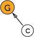
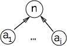
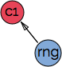
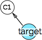

ExcelCompiler
1 ExcelCompiler(named_range, cells)
2 gen_graph()
seeds ← [∀ c ∈ cells / c.f || c.v ]
todo ← [∀ c ∈ cells / c.f ]
cellmap ← dict(x.address,x) ∀ x ∈ seeds
G ← new Digraph
∀ c ∈ cellmap.values

while todo :
c1 ← todo.pop
pystr, ast ← 3 cell2code(c1, curSheet)
If c1.f :
4 e ← shunting_yard(c1.f, or c1.v, named_range)
c1.f → RPN Notation 1 | 2 | + | 4 | × | 3 | + |
5 ast, root ← build_ast(e)
∀ n ∈ e

∀ ai ∈ args
code ← root.emit
Else :
ast ← ∅
code ← str(c1.v) || c1.v
Endif
End cell2code
c1.python_expr ← code
deps ← uniqueify( [ x.tvalue ∀ x ∈ ast.nodes & x is RangeNode ] )
∀ dep ∈ deps :
If is_range(dep) :
6 rng ← CellRange(dep, sheet=cursheet)
⊢ 7 resolve_range(dep, sheet=cursheet)
⊢ #rows, #cols, celladdrs = [ add0, add1, ..., addn ]
If rng.address ∈ cellmap :

continue
Else :
ref ← dep
cells_ref ← list(rows_from_range(ref))
cells ← [cells[c] / ∀ c ∈ cell_refs && c ∈ cells]
rng.value ← [ c.v ∀ c in cells ]
cellmap[rng.address] ← rng
target ← rng
Endif rng.address
Else :
ref ← dep
try:cells ← [ cells[ref] ]
target ← cellmap[c1.address]
cells ← [ ]
target ← [ ]
Endif is_range
∀ c2 ∈ flatten(cells):
If c2.address ∉ cellmap :
If c2.f :
todo.append(c2)
Else :
pystr, ast ← 3 cell2code(c2, curSheet)
c2.python_expression ← pystr
c2.compile()
Endif c2.f
cellmap[c2.address] ← c2
Endif c2.address
If target != [ ] :

Endif target
End ∀ c2
End ∀ dep
End while todo
return Spreadsheet(G,cellmap)